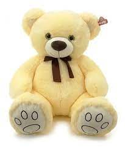

Oso De Peluche
 Precio: $2500Descripción del producto
Oso de peluche gigante beige 100 CM, uso multifuncional: los juguetes de peluche sirven para reemplazar los muebles tapizados, como un detalle cómodo del interior de la casa o simplemente para alegrar a los miembros de la familia durante los juegos y las actividades en común. Los peluches están al 100 % rellenos de bolitas de fibra de silicona que no solo conservan su forma, sino que también tienen propiedades hipoalergénicas.